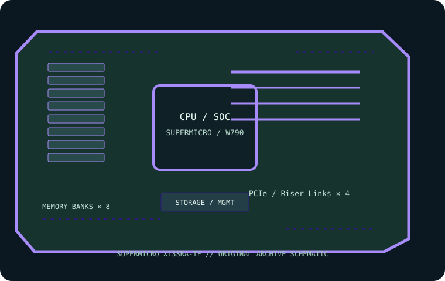

[ INDIVIDUAL COMPONENT // MOTHERBOARDS ]
Supermicro X13SRA-TF
Single LGA4677 W790 workstation platform for qualified Intel Xeon W-2400/W-3400 processors. This page records the exact printed model and revision policy with manufacturer references.

MODEL / REVISION: Exact model X13SRA-TF; revision is not included in the marketed model code. Record PCB silkscreen/assembly revision and match downloaded BIOS/BMC images to it.
Specifications
| Exact model / revision | Supermicro X13SRA-TF — Exact model X13SRA-TF; revision is not included in the marketed model code. Record PCB silkscreen/assembly revision and match downloaded BIOS/BMC images to it. |
|---|---|
| CPU and socket | One Socket E (LGA4677); supports Intel Xeon W-2400 and W-3400 series as specified in Supermicro CPU support and BIOS tables. |
| Chipset / platform | Intel W790. |
| Board size | CEB, 305 × 267 mm (12 × 10.5 in). Confirm CEB/E-ATX chassis support. |
| Memory / ECC / registered | Eight DDR5 ECC Registered DIMM sockets across CPU memory channels; RDIMM and 3DS RDIMM support. Maximum capacity, speed and 1DPC/2DPC rate depend on CPU and DIMM type. |
| PCIe / lanes | Three PCIe 5.0 x16 slots plus one PCIe 4.0 x4 slot; CPU family determines available lanes/slot operation. |
| Storage | Two M.2 PCIe 5.0 x4 sockets and six SATA 6 Gb/s ports. RAID and lane availability depend on firmware and configuration. |
| Networking / BMC | 10GbE plus 1GbE Ethernet; Supermicro IPMI/BMC remote management is provided (management LAN arrangement is shared per board configuration). Confirm the manual for the correct port and access method. |
| Firmware / compatibility | Choose W-2400 vs W-3400 only after checking CPU list, BIOS and the slot/memory matrix; these CPU families expose different lane and memory resources. Use only X13SRA-TF BIOS/BMC files, populate registered ECC DIMMs per channel order and maintain airflow for the supported processor TDP. |
Compatibility and revision notes
Choose W-2400 vs W-3400 only after checking CPU list, BIOS and the slot/memory matrix; these CPU families expose different lane and memory resources. Use only X13SRA-TF BIOS/BMC files, populate registered ECC DIMMs per channel order and maintain airflow for the supported processor TDP.
Before installation, verify the physical revision and assembly label, CPU support list and minimum BIOS; confirm the exact memory type (UDIMM versus registered DIMM), channel population, chassis form factor, PCIe lane routing and storage connector modes against the linked vendor manual. A mechanically compatible socket does not guarantee CPU, firmware, ECC or lane compatibility.
Preservation and service
Record BIOS and BMC versions, serial and MAC labels, installed processors and DIMM part numbers, risers/cables, and test conditions. Use ESD-safe handling, correct socket procedure and chassis airflow. Do not cross-flash firmware from a similarly named board or revision.
Sources & further reading
- Supermicro — X13SRA-TF product specificationsManufacturer reference for the exact board model; use its support/QVL/manual details to verify population and compatibility.
- Supermicro — X13SRA-TF manuals, CPU support and firmware resourcesManufacturer reference for the exact board model; use its support/QVL/manual details to verify population and compatibility.
Manufacturer model-specific references take precedence. Recheck CPU support, QVL, lane tables and current firmware for the printed board revision before service.